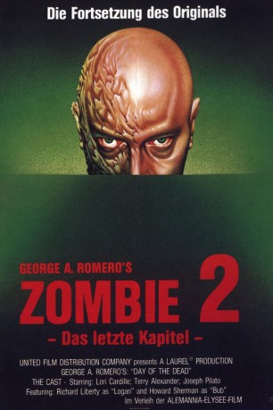

#10456 Zombie 2 - Das letzte Kapitel
Alternativ: Day of the Dead (Englischer Titel)
Auszeichnungen: 1 BAFTA-Awards gewonnen
 
 IMDB-Wertung: 7.2 / 10
IMDB-Wertung: 7.2 / 10  Metascore: 60
Metascore: 60 
In der Nähe der kalifornischen Küste kreist ein Hubschrauber, der nach eventuellen überlebenden Ausschau hält. Nach trostloser Suche fliegt man zu der geheimen, unterirdischen Millitärbasis zurück. Dort lebt eine kleine Anzahl von Menschen, die sich aus Wissenschaftlern und Millitär zusammensetzt und Experimente an Zombies durchführen. Man will versuchen die lebenden Toten zu kontrollieren. Als die Versuche mit den Zombies immer noch keine Früchte tragen und der Chef herausfindet, dass einer seiner toten Männer von Oberarzt Frankenstein an einen Zombie verfüttert wurde, dreht er durch. Jetzt kämpfen die Wissenschaftlerin und ihre beiden verbliebenen Freunde gegen das Millitär und die Zombies…
Jahr: 1985
Dauer: 100 Minuten
FSK: (Banned)
Land: USA Studio: UFDCTonspuren: DD2.0 - ,
Untertitel:
Auflösung: 1080p (1920x1032) Größe: 4218 MB
Genre: Thriller, Horror
Regisseur:  George A. Romero
George A. Romero
Drehbuch: George A. Romero
Soundtrack: John Harrison
Darsteller:
- Lori Cardille als Sarah
- Terry Alexander als John
- Joseph Pilato als Rhodes
 Sherman Howard als Bub
Sherman Howard als Bub- John Amplas als Fisher
- Taso N. Stavrakis als Torrez
 Greg Nicotero als Johnson
Greg Nicotero als Johnson Don Brockett als Featured Zombie
Don Brockett als Featured Zombie- Debra Gordon als Featured Zombie
- Mark Tierno als Featured Zombie
- Mike Ancas als Featured Zombie (uncredited)
- Howard Berger als Spinaround Cave Zombie Shot by John (uncredited)
- Everett Burrell als Surgeon Zombie in Cave (uncredited)
- Adolph Caesar als Narrator of Theatrical Trailer (uncredited)
- Bill Cardille als Elevator Zombie (uncredited)
- Michael Deak als Rhodes' Tallest Zombie Attacker (uncredited)
- Mark Dodson als Zombies (uncredited)
 Peter Iasillo Jr. als Elevator zombie (Tip O'Neil zombie) (uncredited)
Peter Iasillo Jr. als Elevator zombie (Tip O'Neil zombie) (uncredited)- Gary Jones als Zombie with Yellow Apron (uncredited)
- Ralph Langer als Zombie (uncredited)
- Jeff Monahan als Featured Zombie (who pulls Steel's hat off) (uncredited)
- Jim O'Rear als Attacking Zombie (uncredited)
- George A. Romero als Zombie with Scarf (uncredited)
- Michael J. Tomaso als Zombie-Football Player - Florida (uncredited)
- Jarlath Conroy als McDermott
- Anthony Dileo Jr. als Miguel
- Richard Liberty als Logan
- Gary Howard Klar als Steel
- Ralph Marrero als Rickles
- Phillip G. Kellams als Miller
- William Cameron als Featured Zombie
- Deborah Carter als Featured Zombie
- Winnie Flynn als Featured Zombie
- Jeff Hogan als Featured Zombie
- Barbara Holmes als Featured Zombie
- David Kindlon als Featured Zombie
- Bruce Kirkpatrick als Featured Zombie
- 'Wild Bill' Laczko als Featured Zombie
- Susan Martinelli als Featured Zombie
- Kim Maxwell als Featured Zombie
- Barbara Russell als Featured Zombie
- Gene A. Saraceni als Featured Zombie
- John D. Schwartz als Featured Zombie
- Mike Trcic als Featured Zombie
- John Vulich als Featured Zombie
- Joe Abeln als Mustachioed Zombie biting Rickles' fingers off (uncredited)
- Terry Adams als 2nd Dirty Pink Collared Shirted Zombie chasing Steel (uncredited)
- Al Anderson als Mine Zombie Chasing Steel (uncredited)
- Tom Ardolino als Mine Zombie Chasing Steel (uncredited)
- Vini Bancalari als Zombie Feasting on Fisher's Dead Body (uncredited)
Datei: X:\FSK18-Collections\Zombie\Zombie 2 - Das letzte Kapitel (1985, FSK(Banned), 1920x1032).mkv seit 09.01.2019
Festplatte: FSK18
 Alle Filme aus Gruppe 'FSK18-Collections\Zombie'
Alle Filme aus Gruppe 'FSK18-Collections\Zombie'
- Zombie
- Zombie 2 - Das letzte Kapitel (der aktuelle Film)